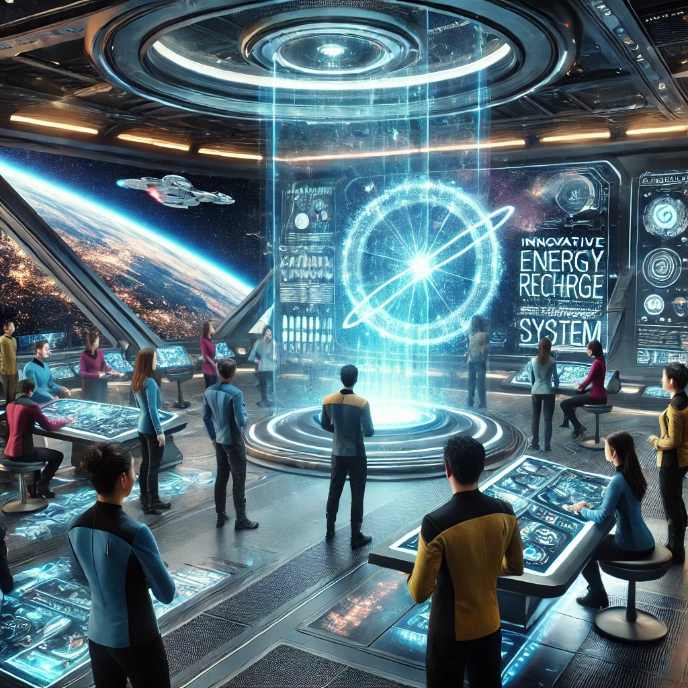
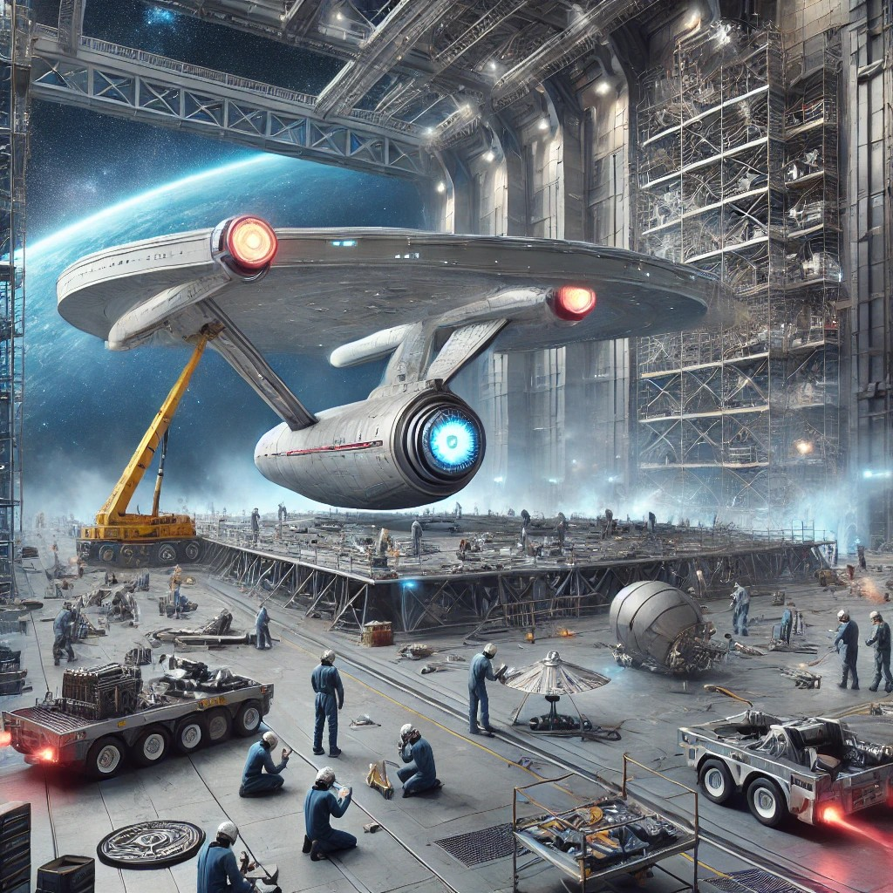
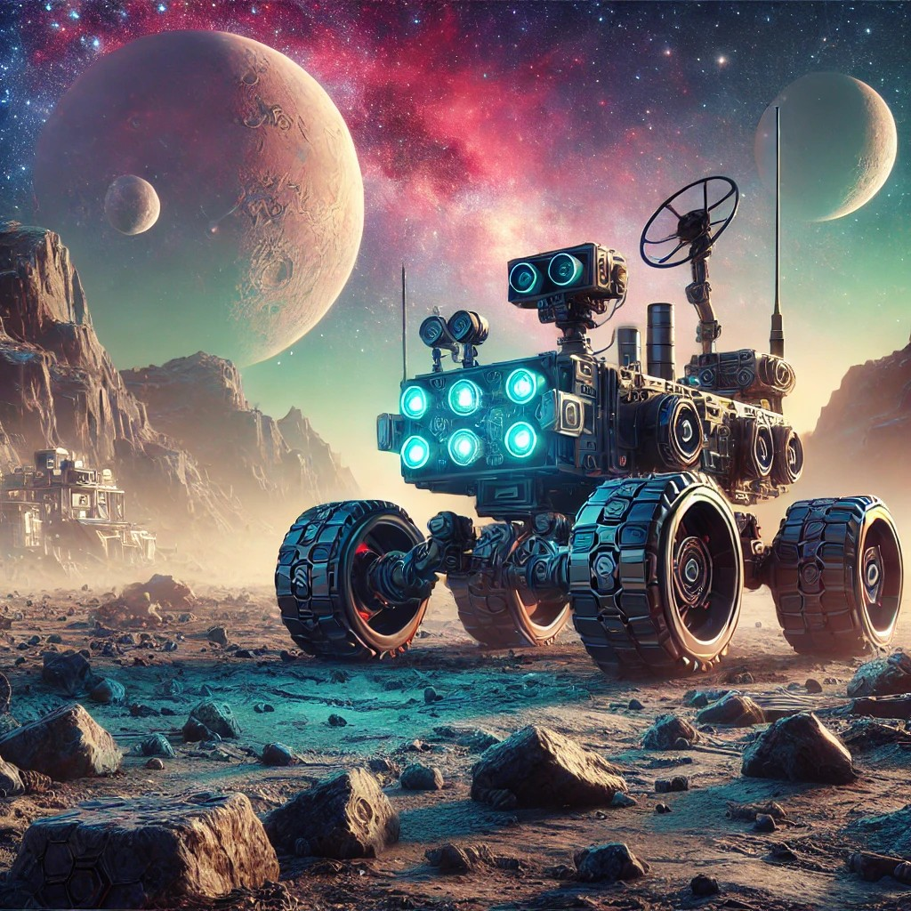
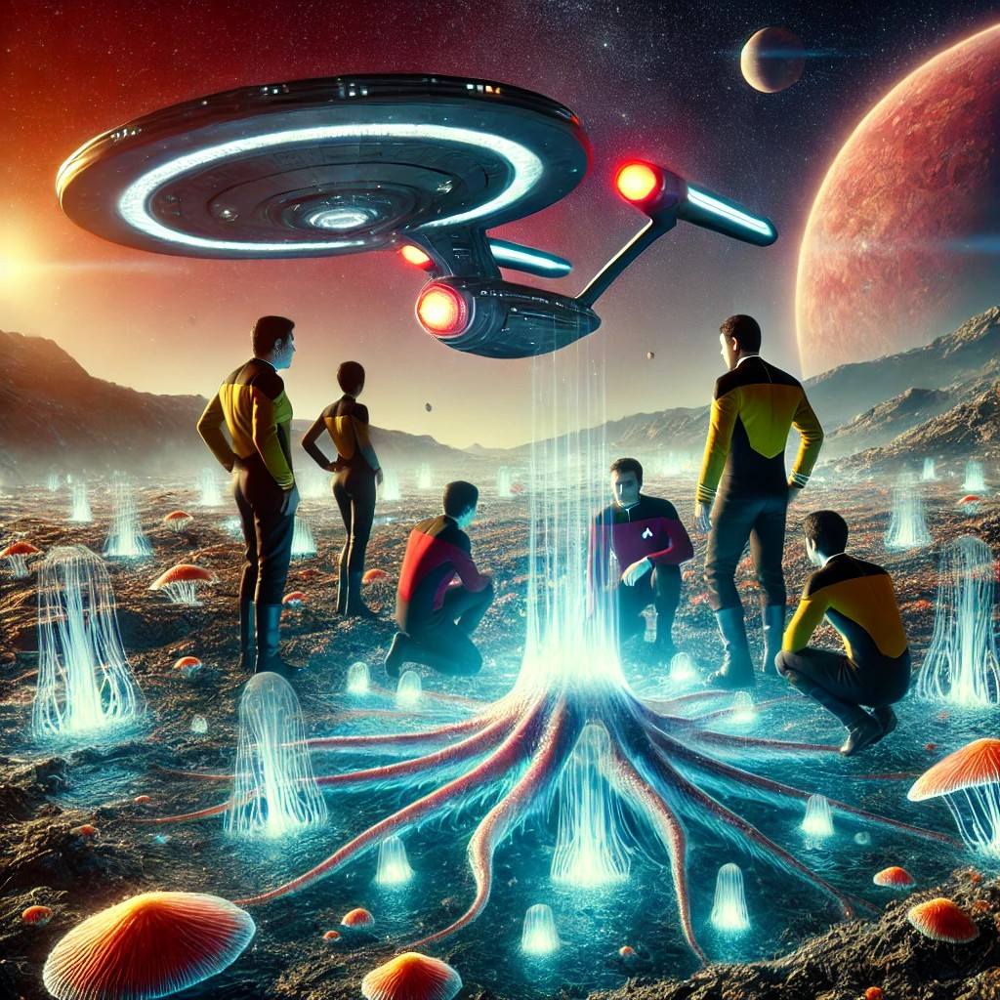

Expedición 5: Fuentes de Energía en la Exploración Espacial
En el vasto e inexplorado espacio, no hay estaciones de servicio para recargar nuestros sistemas. Dependemos completamente de nuestras fuentes de energía a bordo para mantener las operaciones vitales, los escudos defensivos y los sistemas de soporte vital. La tripulación se enfrenta a la necesidad urgente de encontrar formas sostenibles, no contaminantes y eficientes para generar y almacenar energía.

Aquí es donde tú entras en acción. Como parte del equipo científico e ingeniero de la Enterprise, tu misión es investigar y desarrollar un sistema de recarga de energía que pueda funcionar en los ambientes más hostiles y desconocidos del espacio profundo. ¿Qué fuentes de energía son las más prometedoras? ¿Cómo podemos adaptarlas a las condiciones extremas del cosmos?
¿Estás listo para enfrentarte a este desafío?
Vulcanosamente,
Oficial Científico Spock
Expedición 6: Materiales Avanzados para la Última Frontera
Imagina estar a bordo de la USS Enterprise, navegando por los confines del universo, cuando una misión urgente requiere la máxima resistencia y protección de la nave. Como oficial científico, tu conocimiento de materiales avanzados es crucial para la supervivencia de la tripulación y el éxito de la misión. Desde aleaciones de titanio para proteger el casco hasta compuestos de carbono que aseguran durabilidad en el vacío del espacio, cada elección es vital.

En esta actividad, explorarás estos materiales, entendiendo cómo sostienen la exploración espacial en el siglo XXIII y cómo cada decisión puede cambiar el curso del viaje humano hacia lo desconocido. ¿Listo para el desafío? ¡El universo te espera!
Expedición 7: Minería Espacial Sostenible
¡Cadetes!
Hoy nos enfrentamos a un desafío crucial: explorar nuevos mundos sin comprometer su integridad. La minería espacial, necesaria para el progreso, debe llevarse a cabo de manera sostenible, utilizando tecnologías avanzadas como la minería robótica y energías renovables. Es nuestra responsabilidad preservar el equilibrio natural del cosmos y reflexionar sobre las implicaciones éticas de nuestras acciones.
Su tarea es investigar métodos sostenibles para la extracción de minerales, garantizando que nuestras acciones sean éticas y responsables. Recuerden, nuestra misión es explorar, pero también proteger. Les encomiendo esta misión crítica. Que su trabajo refleje la dedicación y los principios de la Flota Estelar.
Larga vida y prosperidad, cadetes. El futuro del universo depende de ustedes.
Vehículos espaciales: Nave Espacial Resistente a Agujeros Negros
¡Cadetes de la Academia Estelar de Star Trek, prepárense para un desafío cósmico verdaderamente emocionante!
En el vasto universo, los agujeros negros son uno de los fenómenos más enigmáticos y peligrosos. Pero ¿qué sucedería si pudiéramos diseñar y construir una nave espacial capaz de resistir sus fuerzas destructivas? En esta actividad, enfrentarán la tarea de crear una Nave Espacial Resistente a Agujeros Negros, considerando una serie de sistemas y características cruciales. ¡Su creatividad, trabajo en equipo y conocimientos serán puestos a prueba en esta misión de ingeniería intergaláctica!
¿Están listos para aceptar el desafío?
Vulcanosamente,
Oficial Científico Spock
¿Te animas a diseñar tu propia nave estelar con Tinkercad? Para ayudarte a empezar, he buscado en la web algunos ejemplos de diseños de Naves Espaciales que pueden inspirarte:
- Proyecto Nave Espacial: Diseño con forma alargada y aerodinámica, con alas laterales y una cola, de color azul metálico con detalles como ventanas, antenas y propulsores.
- Nave Espacial (Diseño Básico): Diseño con forma de disco, motores circulares en la parte inferior, de color gris oscuro con detalles como luces y paneles solares.
- NAVE ESPACIAL: Diseño con forma de cohete, punta afilada y tres aletas traseras, de color rojo y blanco con detalles como escotillas y símbolos.
Vehículos espaciales: Rover de exploración
¡Atención, cadetes!
Hoy se embarcarán en una misión de vital importancia para la Federación. Su tarea es diseñar y programar un Rover de exploración para un planeta recién descubierto, lleno de misterios y desafíos, situado en los confines de nuestra galaxia. Inspirados por las legendarias misiones del USS Enterprise, deben crear un vehículo capaz de enfrentarse a terrenos impredecibles, recolectar datos cruciales y operar de forma autónoma en condiciones extremas.
Este planeta presenta un entorno desconocido, con atmósfera variable y terrenos complejos. ¿Tendrán lo necesario para crear un Rover que no solo sobreviva, sino que también prospere en este ambiente hostil? ¿Podrán ustedes, como pioneros de la exploración, abrir nuevos caminos y desentrañar los secretos que guarda este planeta?

Esta es su oportunidad para brillar como verdaderos exploradores espaciales, utilizando toda su creatividad, ingenio y habilidades técnicas para avanzar en nuestra misión de descubrir lo desconocido.
¡A explorar, el destino final nos espera!
Riesgos en la Colonización de Planetas Habitables
Como oficial de la USS Discovery, has sido asignado a una misión crítica en los confines de la galaxia. Tu equipo acaba de descubrir Epsilon Prime, un planeta que parece ser el próximo hogar perfecto para los humanos: atmósfera respirable, abundancia de agua y recursos ilimitados. Pero, en la exploración inicial, encuentras algo inesperado: una forma de vida microbiana nunca antes vista. Los científicos advierten que estos microorganismos podrían representar un riesgo desconocido para la salud humana, y los ingenieros sugieren que los recursos del planeta son vitales para futuras expediciones.

Aquí surge el dilema: ¿arriesgar la colonización y poner en peligro a los colonizadores, o proteger este mundo y su frágil ecosistema desconocido? La Primera Directiva de la Federación nos pide respeto y precaución, pero la necesidad de expansión y supervivencia humana también es crucial. Este es tu momento para decidir. ¿Elegirás la seguridad de tu tripulación y la preservación de Epsilon Prime, o te aventurarás a colonizar, asumiendo todos los riesgos? Prepárate para un debate que pondrá a prueba tus valores, tu conocimiento y tu visión del futuro de la humanidad en las estrellas.